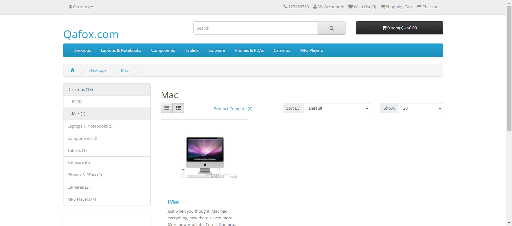
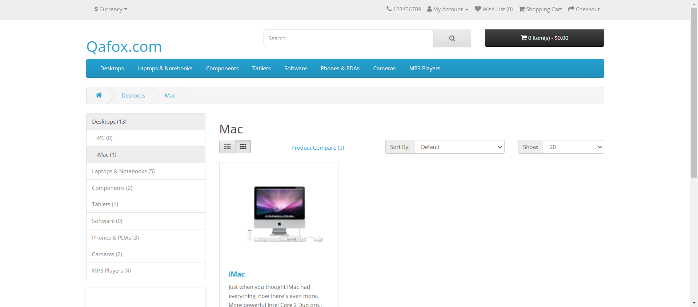

Started
Mar 14, 2025 17:40:51
Ended
Mar 14, 2025 17:41:42
Features Passed
1
Features Failed
4
Features
Scenarios
Steps
Timeline
Tags
| Name | Passed | Failed | Skipped | Others | Passed % |
|---|---|---|---|---|---|
| @Validate_Checkout_As_A_Guest_Button | 0 | 1 | 0 | 0 | 0% |
| @Validate_"Sorting_the_search_results_by_name,_price_or_rating" | 2 | 0 | 0 | 0 | 100% |
| @Validate_"Add_multiple_products_to_cart" | 0 | 1 | 0 | 0 | 0% |
| @Tc_36 | 2 | 0 | 0 | 0 | 100% |
| @Tc_37 | 0 | 1 | 0 | 0 | 0% |
| @Validate_"Adding_a_product_to_the_cart_from_the_Any_page_that_contains_Product_View" | 0 | 1 | 0 | 0 | 0% |
| @Tc_39 | 0 | 1 | 0 | 0 | 0% |
| @Search_Functionality | 2 | 0 | 0 | 0 | 100% |
| @Add_To_Cart | 0 | 2 | 0 | 0 | 0% |
| @Checkout_Functionality | 0 | 2 | 0 | 0 | 0% |
| @Tc_40 | 0 | 1 | 0 | 0 | 0% |
| @Validate_Checkout_Button | 0 | 1 | 0 | 0 | 0% |
| @Tc_38 | 0 | 1 | 0 | 0 | 0% |
System/Environment
| Name | Value |
|---|---|
| Engineer | Israt Rosul |
| Project | PDL Connect |
| Browser | Google Chrome |
| OS | Windows |
-
Search_Functionality_Test_Cases
5:40:52 PM / 00:00:09:345 Pass
Search_Functionality_Test_Cases
03.14.2025 5:40:52 PM 03.14.2025 5:41:01 PM 00:00:09:345 · #test-id=1I want to use this template for my feature filePassValidate Sorting the search results by name, price or ratingPassValidate Sorting the search results by name, price or ratingGiven Perform a search using either keyword or category search to generate a results pagecom.pdl.hooks.Hooks.takeScreenshot(io.cucumber.java.Scenario)image When Locate the Sort By drop-down menu on the search results pagecom.pdl.hooks.Hooks.takeScreenshot(io.cucumber.java.Scenario)image
When Locate the Sort By drop-down menu on the search results pagecom.pdl.hooks.Hooks.takeScreenshot(io.cucumber.java.Scenario)image Then Verify that the Sort By menu is visiblecom.pdl.hooks.Hooks.takeScreenshot(io.cucumber.java.Scenario)image
Then Verify that the Sort By menu is visiblecom.pdl.hooks.Hooks.takeScreenshot(io.cucumber.java.Scenario)image Then Click the drop-down and check for available sorting options Name (A-Z)com.pdl.hooks.Hooks.takeScreenshot(io.cucumber.java.Scenario)image
Then Click the drop-down and check for available sorting options Name (A-Z)com.pdl.hooks.Hooks.takeScreenshot(io.cucumber.java.Scenario)image And Click the drop-down and check for available sorting options Name (Z-A)com.pdl.hooks.Hooks.takeScreenshot(io.cucumber.java.Scenario)image
And Click the drop-down and check for available sorting options Name (Z-A)com.pdl.hooks.Hooks.takeScreenshot(io.cucumber.java.Scenario)image And Click the drop-down and check for available sorting options Price (Low-High)com.pdl.hooks.Hooks.takeScreenshot(io.cucumber.java.Scenario)image
And Click the drop-down and check for available sorting options Price (Low-High)com.pdl.hooks.Hooks.takeScreenshot(io.cucumber.java.Scenario)image And Click the drop-down and check for available sorting options Price (High-Low)com.pdl.hooks.Hooks.takeScreenshot(io.cucumber.java.Scenario)image
And Click the drop-down and check for available sorting options Price (High-Low)com.pdl.hooks.Hooks.takeScreenshot(io.cucumber.java.Scenario)image And Click the drop-down and check for available sorting options Rating (Highest)com.pdl.hooks.Hooks.takeScreenshot(io.cucumber.java.Scenario)image
And Click the drop-down and check for available sorting options Rating (Highest)com.pdl.hooks.Hooks.takeScreenshot(io.cucumber.java.Scenario)image And Select a sorting option Price (Low-High) from the drop-downcom.pdl.hooks.Hooks.takeScreenshot(io.cucumber.java.Scenario)image
And Select a sorting option Price (Low-High) from the drop-downcom.pdl.hooks.Hooks.takeScreenshot(io.cucumber.java.Scenario)image Then Verify that the search results are updated accordinglycom.pdl.hooks.Hooks.takeScreenshot(io.cucumber.java.Scenario)image
Then Verify that the search results are updated accordinglycom.pdl.hooks.Hooks.takeScreenshot(io.cucumber.java.Scenario)image Then Confirm that the products are now sorted in ascending order by pricecom.pdl.hooks.Hooks.takeScreenshot(io.cucumber.java.Scenario)image
Then Confirm that the products are now sorted in ascending order by pricecom.pdl.hooks.Hooks.takeScreenshot(io.cucumber.java.Scenario)image Then Repeat for other sorting options to ensure each one sorts the results correctlycom.pdl.hooks.Hooks.takeScreenshot(io.cucumber.java.Scenario)image
Then Repeat for other sorting options to ensure each one sorts the results correctlycom.pdl.hooks.Hooks.takeScreenshot(io.cucumber.java.Scenario)image Then Ensure that during and after sorting, each product listing still displays an image, name, and pricecom.pdl.hooks.Hooks.takeScreenshot(io.cucumber.java.Scenario)image
Then Ensure that during and after sorting, each product listing still displays an image, name, and pricecom.pdl.hooks.Hooks.takeScreenshot(io.cucumber.java.Scenario)image PassValidate Sorting the search results by name, price or ratingGiven Perform a search using either keyword or category search to generate a results pagecom.pdl.hooks.Hooks.takeScreenshot(io.cucumber.java.Scenario)image
PassValidate Sorting the search results by name, price or ratingGiven Perform a search using either keyword or category search to generate a results pagecom.pdl.hooks.Hooks.takeScreenshot(io.cucumber.java.Scenario)image When Locate the Sort By drop-down menu on the search results pagecom.pdl.hooks.Hooks.takeScreenshot(io.cucumber.java.Scenario)image
When Locate the Sort By drop-down menu on the search results pagecom.pdl.hooks.Hooks.takeScreenshot(io.cucumber.java.Scenario)image Then Verify that the Sort By menu is visiblecom.pdl.hooks.Hooks.takeScreenshot(io.cucumber.java.Scenario)image
Then Verify that the Sort By menu is visiblecom.pdl.hooks.Hooks.takeScreenshot(io.cucumber.java.Scenario)image Then Click the drop-down and check for available sorting options Name (A-Z)com.pdl.hooks.Hooks.takeScreenshot(io.cucumber.java.Scenario)image
Then Click the drop-down and check for available sorting options Name (A-Z)com.pdl.hooks.Hooks.takeScreenshot(io.cucumber.java.Scenario)image And Click the drop-down and check for available sorting options Name (Z-A)com.pdl.hooks.Hooks.takeScreenshot(io.cucumber.java.Scenario)image
And Click the drop-down and check for available sorting options Name (Z-A)com.pdl.hooks.Hooks.takeScreenshot(io.cucumber.java.Scenario)image And Click the drop-down and check for available sorting options Price (Low-High)com.pdl.hooks.Hooks.takeScreenshot(io.cucumber.java.Scenario)image
And Click the drop-down and check for available sorting options Price (Low-High)com.pdl.hooks.Hooks.takeScreenshot(io.cucumber.java.Scenario)image And Click the drop-down and check for available sorting options Price (High-Low)com.pdl.hooks.Hooks.takeScreenshot(io.cucumber.java.Scenario)image
And Click the drop-down and check for available sorting options Price (High-Low)com.pdl.hooks.Hooks.takeScreenshot(io.cucumber.java.Scenario)image And Click the drop-down and check for available sorting options Rating (Highest)com.pdl.hooks.Hooks.takeScreenshot(io.cucumber.java.Scenario)image
And Click the drop-down and check for available sorting options Rating (Highest)com.pdl.hooks.Hooks.takeScreenshot(io.cucumber.java.Scenario)image And Select a sorting option Price (Low-High) from the drop-downcom.pdl.hooks.Hooks.takeScreenshot(io.cucumber.java.Scenario)imageThen Verify that the search results are updated accordinglycom.pdl.hooks.Hooks.takeScreenshot(io.cucumber.java.Scenario)image
And Select a sorting option Price (Low-High) from the drop-downcom.pdl.hooks.Hooks.takeScreenshot(io.cucumber.java.Scenario)imageThen Verify that the search results are updated accordinglycom.pdl.hooks.Hooks.takeScreenshot(io.cucumber.java.Scenario)image Then Confirm that the products are now sorted in ascending order by pricecom.pdl.hooks.Hooks.takeScreenshot(io.cucumber.java.Scenario)image
Then Confirm that the products are now sorted in ascending order by pricecom.pdl.hooks.Hooks.takeScreenshot(io.cucumber.java.Scenario)image Then Repeat for other sorting options to ensure each one sorts the results correctlycom.pdl.hooks.Hooks.takeScreenshot(io.cucumber.java.Scenario)image
Then Repeat for other sorting options to ensure each one sorts the results correctlycom.pdl.hooks.Hooks.takeScreenshot(io.cucumber.java.Scenario)image Then Ensure that during and after sorting, each product listing still displays an image, name, and pricecom.pdl.hooks.Hooks.takeScreenshot(io.cucumber.java.Scenario)image
Then Ensure that during and after sorting, each product listing still displays an image, name, and pricecom.pdl.hooks.Hooks.takeScreenshot(io.cucumber.java.Scenario)image
-
Add_To_Cart_Test_Cases
5:41:01 PM / 00:00:40:483 Fail
Add_To_Cart_Test_Cases
03.14.2025 5:41:01 PM 03.14.2025 5:41:42 PM 00:00:40:483 · #test-id=65I want to use this template for my feature fileFailValidate Adding a product to the cart from the Any page that contains Product Viewcom.pdl.hooks.Hooks.setUp()Given Ensure that that the Add to Cart button is visible and clickableStep skippedWhen Hover over the Add to Cart buttonStep skippedThen Check if product is in stockStep skippedAnd Check if product is out of stockStep skippedThen Click Add to Cart for an in-stock productStep skippedThen Ensure confirmation message styleStep skippedThen Add the product to the cartStep skippedAnd Add another product to the cartStep skippedcom.pdl.hooks.Hooks.tearDown(io.cucumber.java.Scenario) -
Add_To_Cart_Test_Cases
5:41:42 PM / 00:00:00:029 Fail
Add_To_Cart_Test_Cases
03.14.2025 5:41:42 PM 03.14.2025 5:41:42 PM 00:00:00:029 · #test-id=87I want to use this template for my feature fileFailValidate Add multiple products to cartcom.pdl.hooks.Hooks.scenarioName(io.cucumber.java.Scenario)com.pdl.hooks.Hooks.setUp()Given Ensure that each Add to Cart button is visible and clickableStep skippedWhen Click Add to Cart for the first productStep skippedAnd Click Add to Cart for the second productStep skippedThen Add more products to the cartStep skippedThen Check the cart icon updates after each additionStep skippedcom.pdl.hooks.Hooks.tearDown(io.cucumber.java.Scenario)com.pdl.hooks.Hooks.before(io.cucumber.java.Scenario) -
Checkout_Functionality_Test_Cases
5:41:42 PM / 00:00:00:028 Fail
Checkout_Functionality_Test_Cases
03.14.2025 5:41:42 PM 03.14.2025 5:41:42 PM 00:00:00:028 · #test-id=103I want to use this template for my feature fileFailValidate Checkout Buttoncom.pdl.hooks.Hooks.scenarioName(io.cucumber.java.Scenario)com.pdl.hooks.Hooks.setUp()Given Launch the browser and navigate to the correct URLStep skippedThen Verify that the shopping cart option is visible and accessibleStep skippedWhen Verify that user are able to search for a product and add it to the shopping cartStep skippedThen Verify that the checkout button is enabledStep skippedWhen Verify that user are able to Remove all items from the shopping cartStep skippedThen Verify that the checkout button is disabledStep skippedThen Attempt to click the disabled checkout button and verify the displayed error messageStep skippedcom.pdl.hooks.Hooks.tearDown(io.cucumber.java.Scenario)com.pdl.hooks.Hooks.before(io.cucumber.java.Scenario) -
Checkout_Functionality_Test_Cases
5:41:42 PM / 00:00:00:043 Fail
Checkout_Functionality_Test_Cases
03.14.2025 5:41:42 PM 03.14.2025 5:41:42 PM 00:00:00:043 · #test-id=123I want to use this template for my feature fileFailValidate Checkout As A Guest Buttoncom.pdl.hooks.Hooks.scenarioName(io.cucumber.java.Scenario)com.pdl.hooks.Hooks.setUp()Given Launch the browser and navigate to the correct URLStep skippedWhen Add a product to the shopping cartStep skippedAnd Click on the checkout buttonStep skippedThen Verify that the checkout page displays the “Checkout as a Guest” optionStep skippedWhen Select “Checkout as a Guest” and proceedStep skippedThen Verify that the billing and delivery details fields include first name, last name, email, telephone, address, city, postcode, and countryStep skippedAnd Verify that at least one delivery method and one payment method is availableStep skippedWhen Complete the checkout process as a guestStep skippedThen Verify that the order confirmation page displays the order number, order details, payment details, and delivery detailsStep skippedcom.pdl.hooks.Hooks.tearDown(io.cucumber.java.Scenario)com.pdl.hooks.Hooks.before(io.cucumber.java.Scenario)
-
@Validate_Checkout_As_A_Guest_Button
1 tests
@Validate_Checkout_As_A_Guest_Button
1 failedStatus Timestamp TestName Fail 17:41:42 PM Validate Checkout As A Guest Button Checkout_Functionality_Test_Cases.Validate Checkout As A Guest Button -
@Validate_"Sorting_the_search_results_by_name,_price_or_rating"
2 tests
@Validate_"Sorting_the_search_results_by_name,_price_or_rating"
2 passedStatus Timestamp TestName Pass 17:40:52 PM Validate Sorting the search results by name, price or rating Search_Functionality_Test_Cases.Validate Sorting the search results by name, price or ratingPass 17:40:59 PM Validate Sorting the search results by name, price or rating Search_Functionality_Test_Cases.Validate Sorting the search results by name, price or rating -
@Validate_"Add_multiple_products_to_cart"
1 tests
@Validate_"Add_multiple_products_to_cart"
1 failedStatus Timestamp TestName Fail 17:41:42 PM Validate Add multiple products to cart Add_To_Cart_Test_Cases.Validate Add multiple products to cart -
@Tc_36
2 tests
@Tc_36
2 passedStatus Timestamp TestName Pass 17:40:52 PM Validate Sorting the search results by name, price or rating Search_Functionality_Test_Cases.Validate Sorting the search results by name, price or ratingPass 17:40:59 PM Validate Sorting the search results by name, price or rating Search_Functionality_Test_Cases.Validate Sorting the search results by name, price or rating -
@Tc_37
1 tests
@Tc_37
1 failedStatus Timestamp TestName Fail 17:41:01 PM Validate Adding a product to the cart from the Any page that contains Product View Add_To_Cart_Test_Cases.Validate Adding a product to the cart from the Any page that contains Product View -
@Validate_"Adding_a_product_to_the_cart_from_the_Any_page_that_contains_Product_View"
1 tests
@Validate_"Adding_a_product_to_the_cart_from_the_Any_page_that_contains_Product_View"
1 failedStatus Timestamp TestName Fail 17:41:01 PM Validate Adding a product to the cart from the Any page that contains Product View Add_To_Cart_Test_Cases.Validate Adding a product to the cart from the Any page that contains Product View -
@Tc_39
1 tests
@Tc_39
1 failedStatus Timestamp TestName Fail 17:41:42 PM Validate Checkout Button Checkout_Functionality_Test_Cases.Validate Checkout Button -
@Search_Functionality
2 tests
@Search_Functionality
2 passedStatus Timestamp TestName Pass 17:40:52 PM Validate Sorting the search results by name, price or rating Search_Functionality_Test_Cases.Validate Sorting the search results by name, price or ratingPass 17:40:59 PM Validate Sorting the search results by name, price or rating Search_Functionality_Test_Cases.Validate Sorting the search results by name, price or rating -
@Add_To_Cart
2 tests
@Add_To_Cart
2 failedStatus Timestamp TestName Fail 17:41:01 PM Validate Adding a product to the cart from the Any page that contains Product View Add_To_Cart_Test_Cases.Validate Adding a product to the cart from the Any page that contains Product ViewFail 17:41:42 PM Validate Add multiple products to cart Add_To_Cart_Test_Cases.Validate Add multiple products to cart -
@Checkout_Functionality
2 tests
@Checkout_Functionality
2 failedStatus Timestamp TestName Fail 17:41:42 PM Validate Checkout Button Checkout_Functionality_Test_Cases.Validate Checkout ButtonFail 17:41:42 PM Validate Checkout As A Guest Button Checkout_Functionality_Test_Cases.Validate Checkout As A Guest Button -
@Tc_40
1 tests
@Tc_40
1 failedStatus Timestamp TestName Fail 17:41:42 PM Validate Checkout As A Guest Button Checkout_Functionality_Test_Cases.Validate Checkout As A Guest Button -
@Validate_Checkout_Button
1 tests
@Validate_Checkout_Button
1 failedStatus Timestamp TestName Fail 17:41:42 PM Validate Checkout Button Checkout_Functionality_Test_Cases.Validate Checkout Button -
@Tc_38
1 tests
@Tc_38
1 failedStatus Timestamp TestName Fail 17:41:42 PM Validate Add multiple products to cart Add_To_Cart_Test_Cases.Validate Add multiple products to cart
-
io.cucumber.core.exception.CucumberException
12 tests
io.cucumber.core.exception.CucumberException
12 failedStatus Timestamp TestName Fail 17:41:42 PM com.pdl.hooks.Hooks.scenarioName(io.cucumber.java.Scenario) Add_To_Cart_Test_Cases.Validate Add multiple products to cart.com.pdl.hooks.Hooks.scenarioName(io.cucumber.java.Scenario)Fail 17:41:42 PM com.pdl.hooks.Hooks.setUp() Add_To_Cart_Test_Cases.Validate Add multiple products to cart.com.pdl.hooks.Hooks.setUp()Fail 17:41:42 PM com.pdl.hooks.Hooks.tearDown(io.cucumber.java.Scenario) Add_To_Cart_Test_Cases.Validate Add multiple products to cart.com.pdl.hooks.Hooks.tearDown(io.cucumber.java.Scenario)Fail 17:41:42 PM com.pdl.hooks.Hooks.before(io.cucumber.java.Scenario) Add_To_Cart_Test_Cases.Validate Add multiple products to cart.com.pdl.hooks.Hooks.before(io.cucumber.java.Scenario)Fail 17:41:42 PM com.pdl.hooks.Hooks.scenarioName(io.cucumber.java.Scenario) Checkout_Functionality_Test_Cases.Validate Checkout Button.com.pdl.hooks.Hooks.scenarioName(io.cucumber.java.Scenario)Fail 17:41:42 PM com.pdl.hooks.Hooks.setUp() Checkout_Functionality_Test_Cases.Validate Checkout Button.com.pdl.hooks.Hooks.setUp()Fail 17:41:42 PM com.pdl.hooks.Hooks.tearDown(io.cucumber.java.Scenario) Checkout_Functionality_Test_Cases.Validate Checkout Button.com.pdl.hooks.Hooks.tearDown(io.cucumber.java.Scenario)Fail 17:41:42 PM com.pdl.hooks.Hooks.before(io.cucumber.java.Scenario) Checkout_Functionality_Test_Cases.Validate Checkout Button.com.pdl.hooks.Hooks.before(io.cucumber.java.Scenario)Fail 17:41:42 PM com.pdl.hooks.Hooks.scenarioName(io.cucumber.java.Scenario) Checkout_Functionality_Test_Cases.Validate Checkout As A Guest Button.com.pdl.hooks.Hooks.scenarioName(io.cucumber.java.Scenario)Fail 17:41:42 PM com.pdl.hooks.Hooks.setUp() Checkout_Functionality_Test_Cases.Validate Checkout As A Guest Button.com.pdl.hooks.Hooks.setUp()Fail 17:41:42 PM com.pdl.hooks.Hooks.tearDown(io.cucumber.java.Scenario) Checkout_Functionality_Test_Cases.Validate Checkout As A Guest Button.com.pdl.hooks.Hooks.tearDown(io.cucumber.java.Scenario)Fail 17:41:42 PM com.pdl.hooks.Hooks.before(io.cucumber.java.Scenario) Checkout_Functionality_Test_Cases.Validate Checkout As A Guest Button.com.pdl.hooks.Hooks.before(io.cucumber.java.Scenario) -
org.openqa.selenium.TimeoutException
1 tests
org.openqa.selenium.TimeoutException
1 failedStatus Timestamp TestName Fail 17:41:01 PM com.pdl.hooks.Hooks.setUp() Add_To_Cart_Test_Cases.Validate Adding a product to the cart from the Any page that contains Product View.com.pdl.hooks.Hooks.setUp() -
org.openqa.selenium.NoSuchWindowException
1 tests
org.openqa.selenium.NoSuchWindowException
1 failedStatus Timestamp TestName Fail 17:41:42 PM com.pdl.hooks.Hooks.tearDown(io.cucumber.java.Scenario) Add_To_Cart_Test_Cases.Validate Adding a product to the cart from the Any page that contains Product View.com.pdl.hooks.Hooks.tearDown(io.cucumber.java.Scenario)